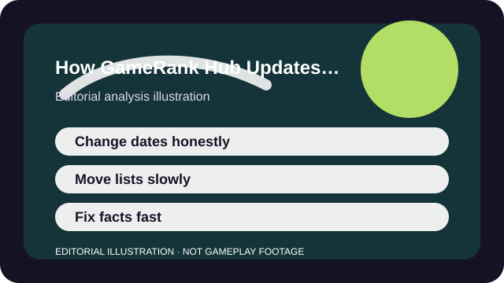

WHY THIS MATTERS
What counts as a material update, why date integrity matters, and why not every seasonal patch deserves a brand-new verdict.
A site can look busy by changing timestamps constantly, but that does not mean the information became more useful. Live-service games change often, yet not every change deserves a fresh headline or a new position in a decision hub.
Our update model therefore separates material changes from surface churn. A page date should move because the reader-facing decision changed, the sources were materially rechecked, or a false statement needed correction—not because we wanted the page to look newer than it really is.

ANALYSIS
What earns a material update
A date changes when the page body needs new facts or a new recommendation frame. That includes platform-support changes, business-model shifts, a meaningful onboarding change, a major new-player route, or a revision to the fit conclusion itself.
On the hub pages, a ranking or grouping should change when the comparison between games changes. A fresh crossover skin or one weekly event is not enough. A new console launch, a new paid gate, or a big shift in onboarding probably is.
ANALYSIS
What does not move the date on its own
Typos, small wording cleanup, and tiny presentational edits do not automatically deserve a new public update date. They improve quality, but they do not pretend that the whole editorial judgment was re-run.
The same rule applies to many live-service patch notes. If a change affects a weapon number or one timed event without changing the player-fit decision, we would rather say less than overstate the importance of the patch.
ANALYSIS
Why ranking movement should be slower than patch noise
A decision hub is supposed to help a reader compare stable tradeoffs such as session length, social load, spending pressure, or onboarding burden. Those tradeoffs move slower than balance patches most of the time.
When lists bounce every week, the movement usually reflects editorial anxiety rather than reader value. We would rather keep a hub stable until the underlying comparison changed in a way a new player would actually notice.
ANALYSIS
How corrections differ from updates
A correction fixes a false or unclear fact as fast as possible even if the ranking, grouping, or date summary does not change much. The point is accuracy first, not drama.
This static preview does not publish a live correction inbox yet, so the public-facing correction route is still deferred to the About page before launch. That limit is part of the transparency too.
TAKEAWAYS
The practical shortlist
- Fresh dates should mean material editorial work, not cosmetic activity.
- A live-service patch matters only if it changes the decision the page is helping with.
- Comparison hubs should move slower than ordinary balance noise.
- Corrections and updates are related, but they are not the same editorial event.
The goal is simple: a reader should be able to trust that a visible date means something. If a page looks updated, it should be updated for a reason that matters to the decision in front of them.
SOURCES AND LIMITS
What this analysis leans on
- This preview cannot yet accept public correction submissions because the contact route is still unpublished.
- Some live-service changes happen between official checks, so a profile can still age between review dates.
- Ranking movement is editorial judgment, not a mathematical score that updates automatically.
This article is an editorial analysis, not a substitute for current store terms, patch notes, or support pages. Use the links above when the live fact itself is the thing you need.